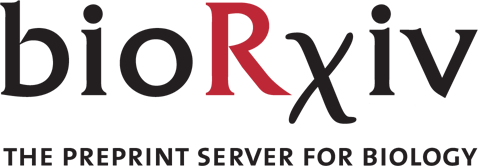

← Back to News
← Back to News
Sep 26, 2024
New Preprints Alert!

Some of the latest works from the lab are now under review and available as preprints:
Reduced neural distinctiveness of speech representations in the middle-aged brain
Zhe-chen Guo, Jacie R. McHaney, Aravindakshan Parthasarathy, Bharath Chandrasekaran
Maggie E. Zink, Leslie Zhen, Jacie R. McHaney, Jennifer Klara, Kimberly Yurasits, Victoria Cancel, Olivia Flemm, Claire Mitchell, Jyotishka Datta, Bharath Chandrasekaran, Aravindakshan Parthasarathy
Satyabrata Parida, Kimberly Yurasits, Victoria E. Cancel, Maggie E. Zink, Claire Mitchell, Meredith C. Ziliak, Audrey V. Harrison, Edward L. Bartlett, Aravindakshan Parthasarathy
Jacie R. McHaney, Kenneth E. Hancock, Daniel B. Polley, Aravindakshan Parthasarathy